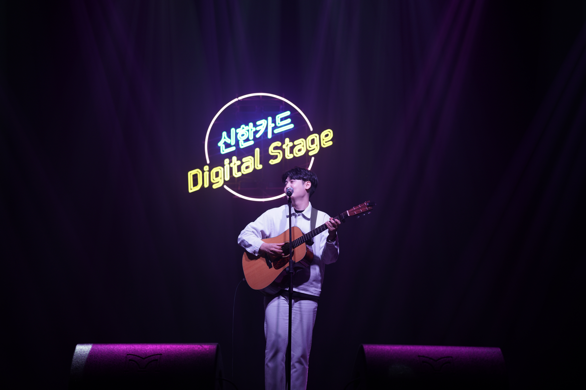

도우진 디스코라피
-2019년
2월 18일 도우진 싱글 'Pluto'
3월 22일 이준식X도우진 EP '야곱의 새벽'
4월 26일 영신X도우진 싱글 '같이 걸을까'
-2020년
6월 25일 싱글 '네 안에 검은 바다가 오면'
참여 앨범
4월 24일 코넷 - [괜찮아] 편곡,세션
-2017년
6월 12일 이혁규 - [애상] 작곡,작사,편곡
8월 9일 코넷 - [그냥] 편곡
8월 23일 박지윤 - [재미없다] 편곡
-2018년
10월 19일 코넷-[가끔그래] 편곡,세션
10월 19일 박지윤-[흐리니까] 편곡,세션
-2019년
3월 14일 노틸러스-[정리] 작곡
3월 27일 영신-[구부러진 말] 작곡,기타세션
4월 3일 Frogman-[앵콜] (1.미안) 기타세션 (2.별 기대 없거든)
기타세션
6월 6일 코넷-[영하 오도] 편곡,기타세션
8월 14일 JaeWon-[Everything's alright] 기타세션
10월 17일 코넷-[하트시그널] 기타세션,믹스
11월 22일 오사마리-[더락] 기타세션
12월 30일 남진이-[내 맘 깊은 곳에 있는] 편곡,세션
-2020
1월 2일 핫박스-[포마드 앤 스킨해드] (1.포마드앤서울) 편곡/기타세션
(2.스킨헤드) 편곡/기타세션
2월 4일 박지윤-[너의 오늘] 편곡/세션
2월 24일 월터-[LIFE] 기타세션
2월 26일 권하은-[0n Cloud 9] (1.On Cloud Nine) 작곡,편곡,세션
(2.어린아이(Mom)) 편곡,세션
6월 1일 월터-[Bloody plants flowers] (2.Life) 기타세션